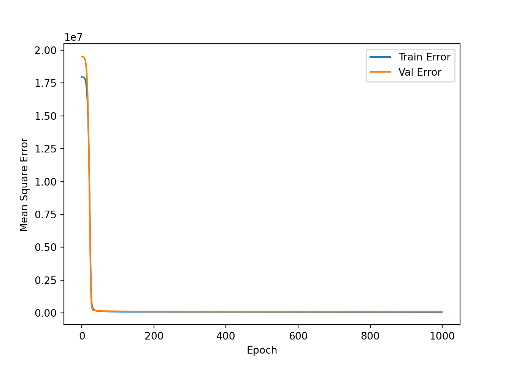
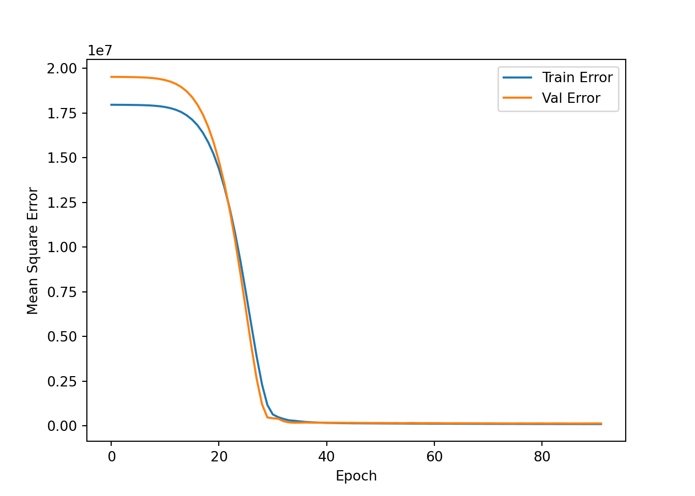

Tensorflow ex
Python
Datamining Basics
펭귄의 종, 서식지, 부리크기, 날개크기, 성별을 통해 몸무게를 예측하는 딥러닝 회귀 모델
데이터 불러오기
seaborn 패키지에 포함된 “penguins” 데이터셋 사용
import matplotlib.pyplot as plt
import numpy as np
import pandas as pd
import seaborn as sns
penguins = sns.load_dataset("penguins") # data 불러오기
penguins = penguins.dropna()
penguins.head() species island bill_length_mm ... flipper_length_mm body_mass_g sex
0 Adelie Torgersen 39.1 ... 181.0 3750.0 Male
1 Adelie Torgersen 39.5 ... 186.0 3800.0 Female
2 Adelie Torgersen 40.3 ... 195.0 3250.0 Female
4 Adelie Torgersen 36.7 ... 193.0 3450.0 Female
5 Adelie Torgersen 39.3 ... 190.0 3650.0 Male
[5 rows x 7 columns]데이터 정보
penguins.info()<class 'pandas.core.frame.DataFrame'>
Int64Index: 333 entries, 0 to 343
Data columns (total 7 columns):
# Column Non-Null Count Dtype
--- ------ -------------- -----
0 species 333 non-null object
1 island 333 non-null object
2 bill_length_mm 333 non-null float64
3 bill_depth_mm 333 non-null float64
4 flipper_length_mm 333 non-null float64
5 body_mass_g 333 non-null float64
6 sex 333 non-null object
dtypes: float64(4), object(3)
memory usage: 20.8+ KBspecies 별 평균치
penguins.groupby('species').mean() bill_length_mm bill_depth_mm flipper_length_mm body_mass_g
species
Adelie 38.823973 18.347260 190.102740 3706.164384
Chinstrap 48.833824 18.420588 195.823529 3733.088235
Gentoo 47.568067 14.996639 217.235294 5092.436975
<string>:1: FutureWarning: The default value of numeric_only in DataFrameGroupBy.mean is deprecated. In a future version, numeric_only will default to False. Either specify numeric_only or select only columns which should be valid for the function.tensorflow 설치 & 임포트
#!pip install tensorflow
import tensorflow as tf
from tensorflow import keras
from tensorflow.keras import layers전처리
카테고리형 변수인 species, island, sex 를 더미 변수화를 통해 0,1로 변환
penguins_cat = pd.get_dummies(penguins,columns=['species','island','sex'])
penguins_cat.head() bill_length_mm bill_depth_mm ... sex_Female sex_Male
0 39.1 18.7 ... 0 1
1 39.5 17.4 ... 1 0
2 40.3 18.0 ... 1 0
4 36.7 19.3 ... 1 0
5 39.3 20.6 ... 0 1
[5 rows x 12 columns]성능 검증을 위한 train_set, test_set로 분리
train_set = penguins_cat.sample(frac=0.8, random_state=9)
test_set = penguins_cat.drop(train_set.index)
len(train_set),len(test_set)(266, 67)train_set, test_set 에서 종속변수 body_mass_g를 분리해 X,y로 만들기
X_train = train_set.drop(['body_mass_g'],axis = 1)
y_train = train_set['body_mass_g']
X_test = test_set.drop(['body_mass_g'],axis = 1)
y_test = test_set['body_mass_g']X_train.head() bill_length_mm bill_depth_mm ... sex_Female sex_Male
232 45.5 13.7 ... 1 0
149 37.8 18.1 ... 0 1
41 40.8 18.4 ... 0 1
278 43.2 14.5 ... 1 0
283 54.3 15.7 ... 0 1
[5 rows x 11 columns]데이터를 정규화시켜주는 레이어 normalizer
normalizer = tf.keras.layers.Normalization(axis=-1)
normalizer.adapt(np.array(X_train))
print(normalizer.mean.numpy())[[4.4052250e+01 1.7237219e+01 2.0085341e+02 4.4360906e-01 2.1052630e-01
3.4586465e-01 4.7368425e-01 3.9097744e-01 1.3533835e-01 4.8496246e-01
5.1503760e-01]]첫번째 행 데이터와 정규화된 데이터 비교
first = np.array(X_train[:1])
with np.printoptions(precision=2, suppress=True):
print('First example:', first)
print()
print('Normalized:', normalizer(first).numpy())First example: [[ 45.5 13.7 214. 0. 0. 1. 1. 0. 0. 1. 0. ]]
Normalized: [[ 0.26 -1.85 0.93 -0.89 -0.52 1.38 1.05 -0.8 -0.4 1.03 -1.03]]모델 생성 함수
1번 레이어는 정규화 레이어
각 레이어의 퍼셉트론 개수, 활성함수 지정
마지막 레이어는 1개 퍼셉트론으로 최종 예측값 출력
def build_and_compile_model(norm):
model = keras.Sequential([
norm,
layers.Dense(64, activation='relu'),
layers.Dense(32, activation='relu'),
layers.Dense(16, activation='relu'),
layers.Dense(8, activation='relu'),
layers.Dense(1)
])
model.compile(loss='mean_absolute_error',
optimizer=tf.keras.optimizers.Adam(0.001),
metrics = ['mae','mse'])
return model
모델 생성
dnn_model = build_and_compile_model(normalizer)
dnn_model.summary()Model: "sequential"
_________________________________________________________________
Layer (type) Output Shape Param #
=================================================================
normalization (Normalizatio (None, 11) 23
n)
dense (Dense) (None, 64) 768
dense_1 (Dense) (None, 32) 2080
dense_2 (Dense) (None, 16) 528
dense_3 (Dense) (None, 8) 136
dense_4 (Dense) (None, 1) 9
=================================================================
Total params: 3,544
Trainable params: 3,521
Non-trainable params: 23
_________________________________________________________________학습
EPOCH = 학습횟수
class PrintDot(keras.callbacks.Callback):
def on_epoch_end(self, epoch, logs):
if epoch % 100 == 0: print('')
print('.', end='')
EPOCHS = 1000
history = dnn_model.fit(
X_train,
y_train,
validation_split=0.2,
verbose=0,epochs=EPOCHS,callbacks=[PrintDot()])
....................................................................................................
....................................................................................................
....................................................................................................
....................................................................................................
....................................................................................................
....................................................................................................
....................................................................................................
....................................................................................................
....................................................................................................
....................................................................................................학습 결과
hist = pd.DataFrame(history.history)
hist['epoch'] = history.epoch
hist.tail() loss mae mse ... val_mae val_mse epoch
995 186.113449 186.113449 65757.625000 ... 255.965027 103340.953125 995
996 186.503571 186.503571 67321.039062 ... 252.875839 102204.851562 996
997 187.321289 187.321289 66267.523438 ... 254.722839 102272.015625 997
998 185.432449 185.432449 66099.835938 ... 251.934799 101026.132812 998
999 184.514938 184.514938 65823.742188 ... 257.885498 104468.203125 999
[5 rows x 7 columns]def plot_history(history):
plt.cla()
hist = pd.DataFrame(history.history)
hist['epoch'] = history.epoch
plt.plot()
plt.xlabel('Epoch')
plt.ylabel('Mean Square Error')
plt.plot(hist['epoch'], hist['mse'],
label='Train Error')
plt.plot(hist['epoch'], hist['val_mse'],
label = 'Val Error')
#plt.ylim([0,3000])
plt.legend()
plt.show()plot_history(history)
Validation loss 기준 Early stop옵션 적용
model = build_and_compile_model(normalizer)
early_stop = keras.callbacks.EarlyStopping(monitor='val_loss', patience=10)
history = model.fit(X_train,
y_train, epochs=EPOCHS,
validation_split = 0.2, verbose=0, callbacks=[early_stop, PrintDot()])
....................................................................................................
......................................plot_history(history)